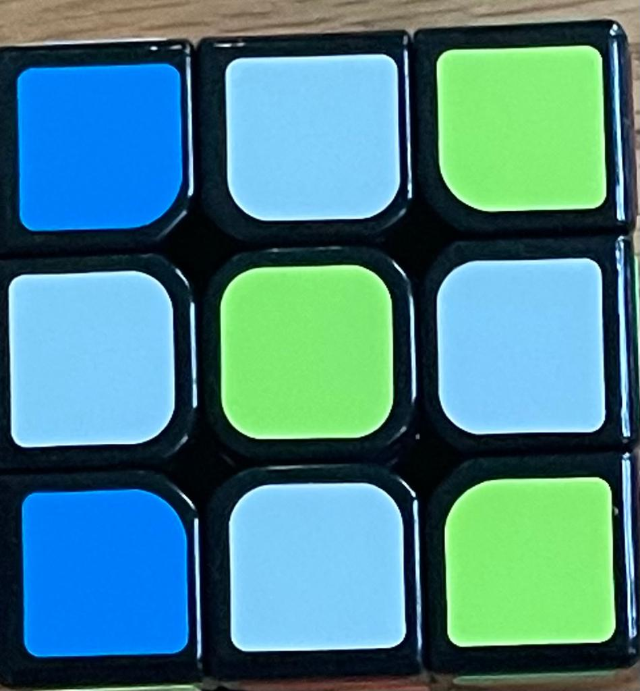
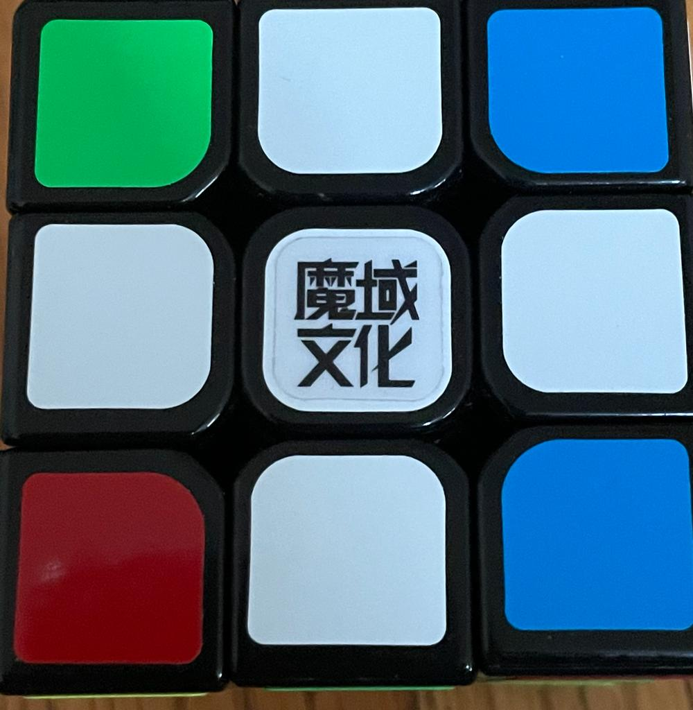
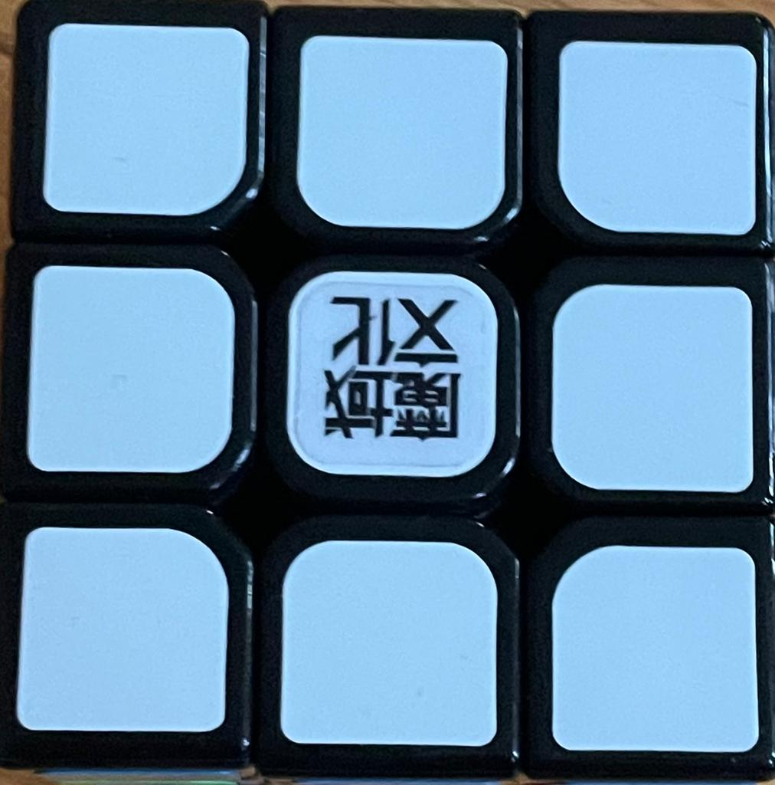
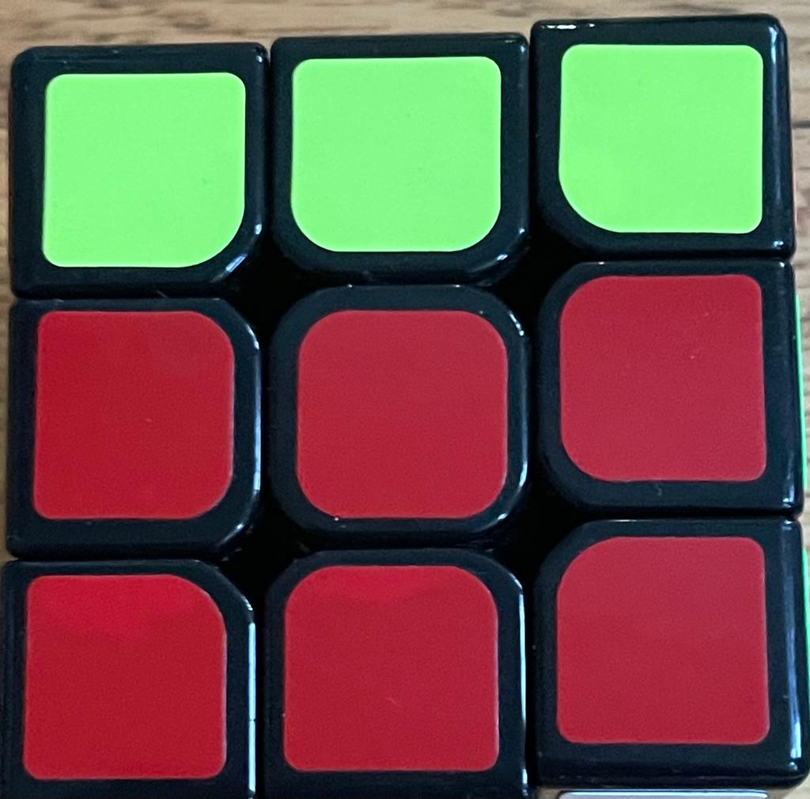
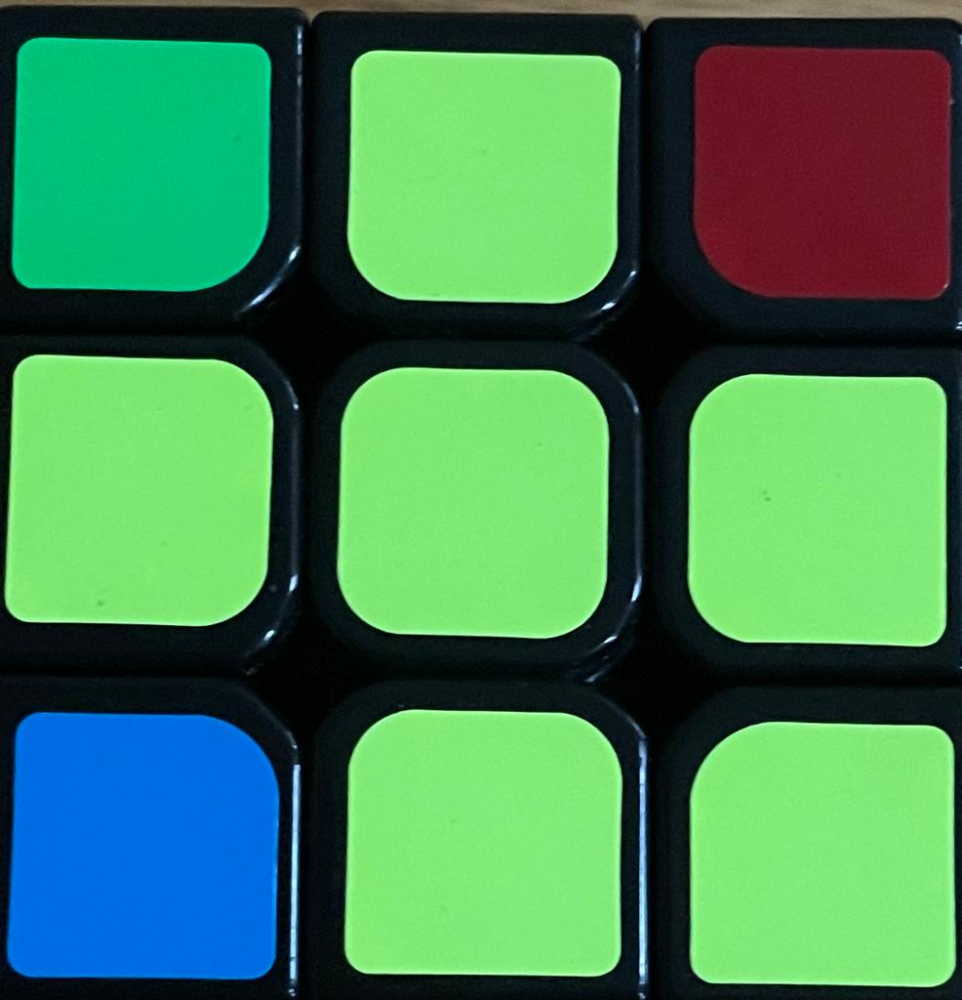
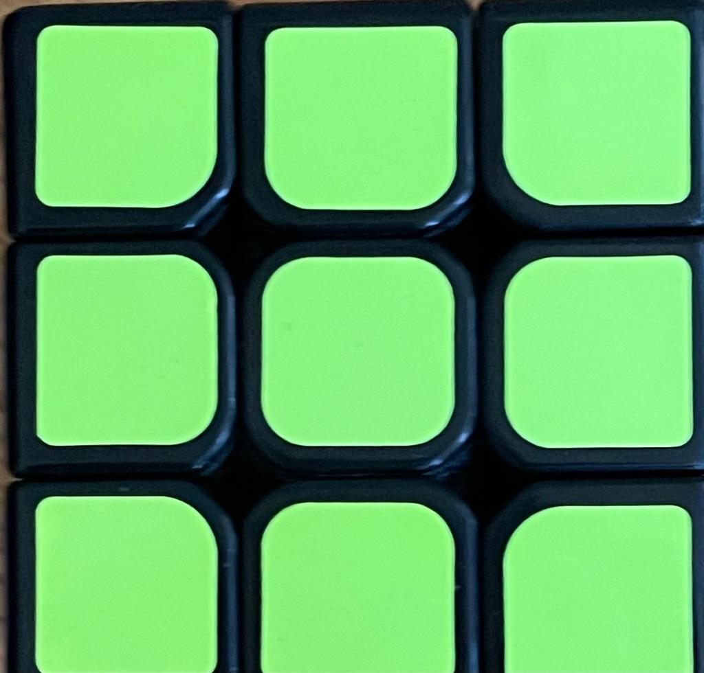
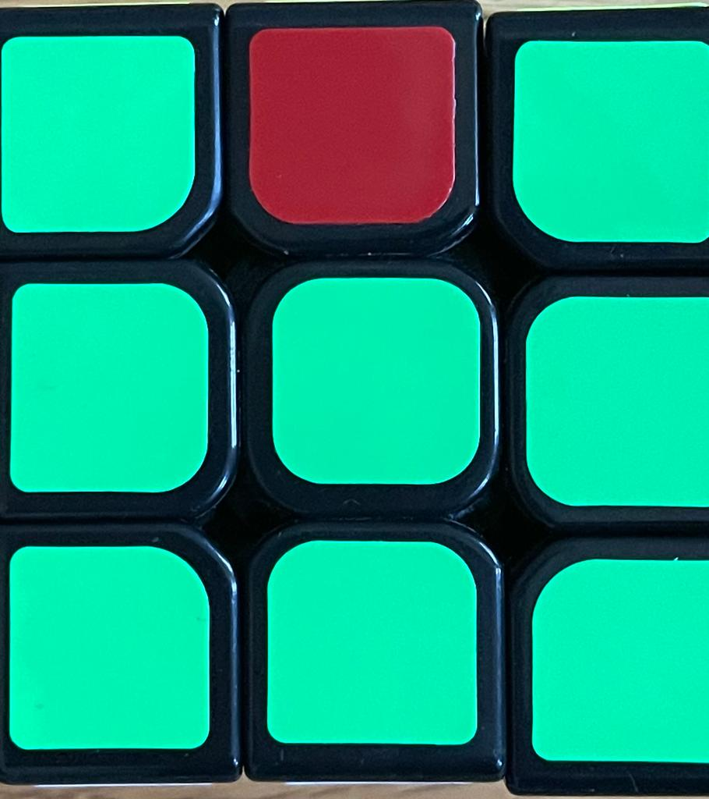

How to solve a rubik cube
1.
First Step: Make the daisy.The daisy is a yellow center four white edge pieces.this is a video on how to do this step

2.
Second step: Solving the first layer is to make the white cross by rotating the top face of the cube.
Match the non-white sticker from each of those edge pieces to the center pice of the same color once you have matched the sticker to the same
color center rotate the face with the matching center two times moving a daisy petal from the top face of the
cube to the bottom now you should repeat for ever this step three more times once for each of the
remaining daisy petals.this is a video on how to do this step

cube moves
one move you will use a lot is the left and right trigger
the left trigger is to move the left side with your left hand by 90 degrees away from you use your left index finger to trun the top face by 90 degrees towrads you and right trigger is with you right hand rotate face ninnety degrees away from you use your right index finger to pull the top face towards you dy 90 degrees then use your right hand to rotate the right face dy degrees back you.
3.
Third step: You shloud look for outward facing white stickers once you find a white sticker look
at the color to the side of your white sticker now rotate the top face so the color beside you white sticker
is diagonally matched to the center of the same color .If your corner sticker if oriented to the left do the left
trigger.If it is on he right side do the right trigger.If you have a white sticker on the bottom layer dermine if it is on the left or the right side
if it is on the right side do the right trigger and if it is on the left side do the left trigger.If you have a white piece on the top make it so the
white sticker is opposite a non white sticker on the bottem face of the cube.If the white sticker is on the left or the right side a do the appropriate trigger
move but do it two times.this is a video on how to do this step

4.
step four: first on the top face look for edge pieces with no yellow stickers when you find one match the edge piece facing out matching center piece
now see if the color on the top matches the left or the right side.If it matches the right side do the right triger.And if it matches the left side do do the left triger .Now diplace the white sticker
to fixs that look at the sticker beside and diagonally match it to the same coler center pices and if it is on the left do the left trigger and if it is on the right side do the
right trigger. If you have no edge pices without yellow stickers and still your middle layer is not solved the fixs
this you are going to need to put out the the pices that is not solved by looking if it is on the left side do the left trigger and if is on the
right side do the right trigger.this is a video on how to do this step

Cube notations
If you see F it means to move the front face. If you see B it stands for the back. If you see
L it stands for the left face. If you see R it stands for the right side. If you see D it means trun the bottom face. And if you see it means to trun the topp face. If you see a prime sing it means
trun the face counter clockwise and if you see no prime sign it means to trun the face clockwise. If you see a two at the end, it means the trun the face two times and if you see no 2 it means
trun it one time.
5.
step five:in step five you will make a yellow cross. If you have no yellow sdge pices
di the algo F U R U' R' F'.If you have two yellow edge pices so makes a line trun the top face so the line is up and down
and do algo F U R U' R' F'.If you have two yellow edge pices so it makes a backwards L trun the top face so the two edge pices are
at the 12 and 9 positions on a clock and do the algo F U R this is a video on how to do this step

6.
step six:in step six you solve the yellow face.First look at the top face,how many corners do you have with yellow stickers .
If yo have 0 or 2 yellow corner pices rotate the top face of your cube so there is yellow sticker
it the upper right hand corner of the left face when you have your yellow sticker in place
do the alog R U R' U R U2 R'.If you have a yellow cross and only one yellow corner it will look
like a fish. Now turn the top face so the fishes mouth is pointing down to the left and do
the algo R U R' U R U2 R'this is a video on how to do this step

7.
step seven: position the cornes. The first thing you need to do is inspect the top
layer of your cube.You want to look at the uppermost corner piecs.If one of your sides has matching
cornes piecs hold it in your left hand and do algo L' U R U' L U R' R U R'U.If one you do not have a matching corner piecs do
algo L' U R U' L R' R U R' U.this is a video on how to do this step

8.
step eight:if one of your sides is completely solved face it away from you now do the algo
F2 U R' L F2 L' R U F2.If your cube is still not colved do the algo again.If you do not
have to side solved do the alog F2 U' R' L F2 L' R U' F2 now you will have one solved side
and face it away from you F2 U' R' L F2 L' R U' F2.this is a video on how to do this step